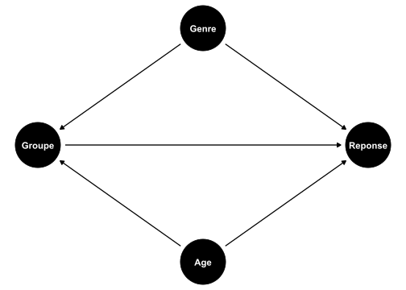
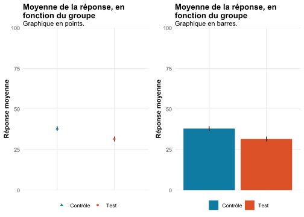
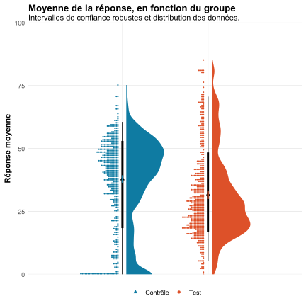
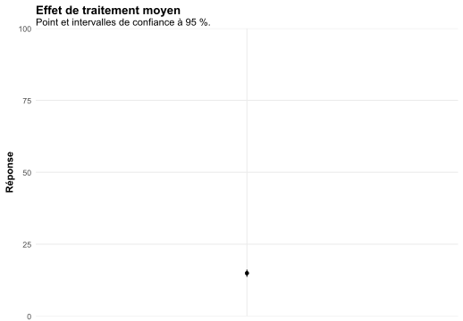

Pour un récent projet sur lequel je suis impliqué, je me suis demandé s’il n’était pas possible de mieux représenter les résultats issus de modèles linéaires que le classique point + intervalles de confiance ou barres + intervalles de confiance. Ce post est une sorte de compte-rendu / pense-bête / notes-pour-le-moi-du-futur de mes réflexions et avancées techniques.
Date de publication
3 mai 2026
Résumé
Point de départ
En psychologie, en économie, en biologie, etc… nous analysons des données d’expérimentations, que nous communiquons ensuite au sein de papiers, de chapitres, ou encore de conférences. Nous analysons le plus souvent ces données via des modèles linéaires, et nous rapportons ensuite un joli test ou une jolie régression (#NoKinkShaming). Les plus habiles d’entre nous vont jusqu’à rapporter un (joli) graphique des résultats et renvoyer la (jolie) table de régression en annexe.
Deux cas de figure peuvent apparaître.
On se contente de rapporter des points, souvent des moyennes, avec parfois un intervalle de confiance
Si le test n’est qu’une comparaison de moyennes, ces graphiques représentent des statistiques descriptives.
Si le test est une comparaison de moyennes ajustées, par exemple en sortie de régression multiple, les graphiques sont un poil plus complexes à réaliser, mais cela reste largement faisable avec la plupart des logiciels d’aujourd’hui.
On souhaite également rapporter la distribution des données
A nouveau, si l’on travaille à partir de deux variables, il est simple de représenter les données sous-jacentes et leur résumé.
Cependant, dès lors que l’on raisonne à partir d’une régression en logique toutes choses égales par ailleurs, la représentation graphique se complique : les quantités d’intérêt ne sont plus les observations brutes, mais des prédictions dérivées du modèle pour une grille de prédicteurs.
Pourquoi vouloir s’embêter à représenter l’ensemble de la distribution? Car les graphiques en points / en barres sont limités, en ce qu’ils résument l’ensemble des données au seul paramètre de la moyenne (cf. par exemple ce #TidyTuesday). Les meilleures pratiques sont plutôt de représenter (1) les données et (2) un résumé des données. Ce post de blog est une sorte de notes-pour-plus-tard-et-à-moi-même pour visualiser ces prédictions individuelles moyennes, avec un résumé des données. Il se trouve que c’est faisable avec un peu d’huile de coude1.
Préparer l’environnement
Je commence par charger les packages, par définir un thème ggplot2(), et par simuler des données assez simples. L’avantage de les simuler, c’est que l’on peut spécifier la vraie valeur qu’un paramètre doit renvoyer :
Voir le code
#### Charger les packages ####library(tidyverse); library(ggpubr); library(ggtext); library(modelsummary)library(easystats); library(broom); library(gt); library(ggdag); library(labelled); library(marginaleffects); library(ggdist); library(gtsummary)theme_gtsummary_language("fr")#### Définir une seed, pour des résultats reproductibles ####seed =891set.seed(seed)#### Construire un thème ggplot() personnalisé ##### Quasi entièrement copié d'Andrew Heiss: https://www.andrewheiss.com/blog/2021/12/20/fully-bayesian-ate-iptw/# Avec l'aide de Nicolas Rennie: https://nrennie.rbind.io/art-of-viz/programming-languages.htmlegypt <- MetBrewer::met.brewer("Egypt")theme_nice <-function() {theme_minimal(base_family ="Times") +theme(panel.grid.minor =element_blank(),plot.background =element_rect(fill ="white", color =NA),plot.title =element_textbox_simple(lineheight =0.5, face ="bold"),plot.subtitle =element_textbox_simple(lineheight =0.5),plot.caption =element_textbox_simple(lineheight =0.5),axis.title =element_text(face ="bold"),strip.text =element_text(face ="bold", size =rel(0.8), hjust =0),strip.background =element_rect(fill ="grey80", color =NA),legend.position ="bottom",legend.title=element_blank(),# Rien en Xaxis.title.x=element_blank(),axis.text.x=element_blank(),axis.ticks.x=element_blank())}# Faire de ce thème le thème par défauttheme_set(theme_nice())#### Générer des données ####n <-1000# Genre ~ 50/50genre <-rbinom(n, 1, 0.5) # 1 = Garçon, 0 = Fillegenre <-factor(genre, levels =c(0, 1), labels =c("Fille", "Garçon"))# Âge : 18 à 70, dépendant du genreage <-ifelse( genre =="Garçon",runif(n, 30, 70), # Garçons plus âgés en moyennerunif(n, 18, 50)) # Filles plus jeunes en moyenne# Groupe : dépend du genre et donc indirectement également de l’âgegroupe_num <-ifelse( genre =="Garçon",rbinom(n, 1, 0.8),rbinom(n, 1, 0.2))groupe <-factor(groupe_num, levels =c(0, 1), labels =c("contrôle", "test"))#### Génération de la réponse ##### Effets structurelsbeta_groupe <-15# effet vraibeta_fille <-25beta_age <--0.6# âge défavorisant, corrélé au groupereponse <-40+ beta_groupe * (groupe =="test") + beta_fille * (genre =="Fille") + beta_age * age +rnorm(n, 0, 8)# Contraindre la réponse entre 0 et 100reponse <-pmin(pmax(reponse, 0), 100)df <-data.frame(reponse = reponse,groupe = groupe,genre = genre,age =round(age, 0))var_label(df) <-list(genre ="Genre",age ="Âge",reponse ="Réponse",groupe ="Groupe")
Une variable réponse continue, qui peut prendre de 0 à 100. Cette variable pourrait être (presque) n’importe quoi : l’estime de soi, la confiance en soi, la santé, le sentiment de compétence à l’école…
Une variable groupe, qui encode une manipulation que l’on a réalisée. Cela peut être en laboratoire, dans une école, via Qualtrics… à nouveau, qu’importe. Le vrai effet de cette variable est \(\beta\) = 15.
Une variable genre binaire (désolé pour les personnes au-milieu ou en-dehors du genre, c’est pour simplifier).
Une variable age continue.
Regardons ce que cela donne :
Unique
Missing Pct.
Mean
SD
Min
Median
Max
Histogram
Réponse
979
0
34.8
17.3
0.0
35.0
85.1
Âge
53
0
42.3
13.2
18.0
42.0
70.0
N
%
Groupe
contrôle
513
51.3
test
487
48.7
Genre
Fille
502
50.2
Garçon
498
49.8
Table 1: Description des données simulées.
Cependant, pour une raison qui nous est inconnue, l’allocation aléatoire n’a pas bien fonctionné (c’est bien la tuile !), et les données collectées dépendent très largement du genre et de l’âge des personnes :
Fille
Garçon
[18,25]
N = 1191
(25,40]
N = 2331
(40,55]
N = 1501
(55,70]
N = 01
[18,25]
N = 01
(25,40]
N = 1131
(40,55]
N = 1981
(55,70]
N = 1871
Réponse
54.72 (10.17)
49.07 (9.84)
40.23 (10.43)
30.45 (10.24)
22.64 (9.64)
15.31 (9.73)
1 Moyenne (ET)
Table 2: Description des données simulées, par genre et par âge.
Or, mettons que le genre et l’âge influencent également la réponse. On se retrouve dans le cadre classique d’une variable dite confondante, au sens où elle influence à la fois le prédicteur et la réponse (Cinelli et al., 2022), et biaise donc le véritable effet causal. Le graphe acyclique dirigé, du genre que l’on aimerait toujours aussi simple, est représenté en Figure 1 :

Figure 1: Graphe acyclique dirigé du processus de génération des données.
Estimer la différence entre les groupes
Dans notre échantillon, l’effet d’un côté du genre & de l’âge et de l’autre du groupe se compensent, de sorte que la différence moyenne observée entre le groupe test et le groupe contrôle est fausse. En conséquence, ajuster le modèle linéaire suivant renvoie un coefficient \(\beta\) biaisé :
\(D_i\) est une variable indicatrice telle que \(D_i = 1\) si l’individu \(i\) appartient au groupe test et \(D_i = 0\) s’il appartient au groupe contrôle
\(\beta\) représente la différence moyenne de \(Y\) entre le groupe test et le groupe contrôle
Paramètre
Estimation
[IC 95 %]
Erreur standard
Statistique t (998)
p-valeur
β
[IC 95 %]
(Intercept)
37.89 [36.42; 39.37]
0.75
50.38
< .001
0.18 [0.1; 0.27]
Groupe : Test
-6.42 [-8.53; -4.3]
1.08
-5.94
< .001
-0.37 [-0.49; -0.25]
Note : n = 1 000 observations.
Table 3: Régression de la Réponse par le Groupe.
L’intercept de la Table 3 signifie que la moyenne de la réponse du groupe de contrôle est de 37.89. Le paramètre estimé pour le groupe test signifie qu’il présente une différence moyenne au groupe contrôle de -6.42. Donc, sa moyenne vaut 37.89 + -6.42 = 31.47.
Ce que l’on peut facilement vérifier, via une simple moyenne, dans la Table 4 :
Groupe
Moyenne
Contrôle
37.89
Test
31.47
Table 4: Tri à plat de la moyenne de la Réponse, par le Groupe.
Autrement dit, si le modèle linéaire ne contient que deux paramètres (un intercept et une variable), il est possible de directement travailler à partir des données brutes pour calculer les moyennes et intervalles de confiance2. Cependant, je crois qu’il vaut mieux travailler à partir de modèles linéaires qu’à partir des données brutes :
D’abord, s’il est vrai que pour des modèles simples comme le notre cela ne change rien à l’estimation des paramètres, pour des modèles plus complexes (trois paramètres, des interactions, etc…), les paramètres estimés ne sont plus les paramètres bruts. Il faudra directement travailler à partir du modèle, autant s’y habituer.
De plus, au-delà des estimations, c’est l’erreur qui nous intéresse : c’est à partir de l’erreur que l’on calcule les intervalles de confiance, t ou z, et p. Travailler à partir d’un modèle linéaire permet donc utiliser des erreurs robustes à l’hétéroscédasticité, bootstrap, clusters, et d’autres encore (Zeileis, 2004).
Finalement, c’est une bonne pratique, en anticipation de modèles plus complexes comme par exemple des modèles de panel (Bergé, 2018).
C’est la méthode que nous allons employer pour réaliser la Figure 2 à partir d’erreurs robustes.
Représenter un résumé des données
Voir le code
marginal_means_lm1 <-avg_predictions(lm1, variables ="groupe", vcov ="HC3") %>%as.data.frame()p1 <- marginal_means_lm1 %>%ggplot(aes(x = groupe, y = estimate, colour = groupe, shape = groupe)) +geom_errorbar(aes(ymin = conf.low, ymax = conf.high, colour =NULL),width =0,colour ="black") +geom_point(size =1.5) +scale_colour_manual(values =c("test"= egypt[1], "contrôle"= egypt[2]),breaks =c("contrôle", "test"),labels =c("contrôle"="Contrôle", "test"="Test")) +scale_shape_manual(values =c("test"=16, "contrôle"=17), breaks =c("contrôle", "test"), labels =c("contrôle"="Contrôle", "test"="Test")) +guides(colour =guide_legend(override.aes =list(shape =c(17, 16),linetype =0)),shape ="none") +scale_y_continuous(limits =c(0, 100), expand =expansion(mult =c(0, 0))) +labs(title ="Moyenne de la réponse, en fonction du groupe",subtitle ="Graphique en points.",x =NULL, y ="Réponse moyenne")p2 <- marginal_means_lm1 %>%ggplot(aes(x = groupe, y = estimate, fill = groupe)) +geom_col() +geom_errorbar(aes(ymin = conf.low, ymax = conf.high), width =0) +scale_fill_manual(values =c("test"= egypt[1], "contrôle"= egypt[2]), breaks =c("contrôle", "test"), labels =c("contrôle"="Contrôle", "test"="Test")) +scale_y_continuous(limits =c(0, 100), expand =expansion(mult =c(0, 0))) +labs(title ="Moyenne de la réponse, en fonction du groupe", subtitle ="Graphique en barres.", x =NULL, y ="Réponse moyenne")ggarrange( p1, p2,align ="v", common.legend =FALSE,legend ="bottom")

Figure 2: Un exemple de graphiques qui fonctionnent, mais qui pourraient être améliorés. La barre représente l’intervalle de confiance à 95 %, calculé à partir d’erreurs robustes à l’hétéroscédasticité.
Ces graphiques sont quasiment clé en main : ils représentent les moyennes marginales issues d’un modèle linéaire, avec l’incertitude liée à l’estimation calculée de façon robuste.
Représenter un résumé des données et les observations
Le graphique que l’on vient de réaliser masque (1) les 1 000 observations que nous avons simulées et (2) la dispersion des données. Nous pourrions souhaiter représenter ces données, et la complexité qu’elles recoupent, par exemple avec ggdist(Kay, 2024).
Voir le code
p3 <- marginal_means_lm1 %>%ggplot(aes(x = groupe, y = estimate)) +stat_slab(data = df,aes(x = groupe, y = reponse, fill = groupe),scale =0.45,colour =NA,adjust =0.7,justification =-0.1) +stat_dotsinterval(data = df,aes(x = groupe, y = reponse, fill = groupe, shape = groupe),side ="bottom",scale =0.45,point_size =1.5,adjust =0.7,point_interval = mean_qi,justification =1.1,slab_linewidth =0) +geom_errorbar(aes(ymin = conf.low, ymax = conf.high, colour = groupe), width =0, linewidth =1) +scale_colour_manual(values =c("test"= egypt[1], "contrôle"= egypt[2]),breaks =c("contrôle", "test"),labels =c("contrôle"="Contrôle", "test"="Test")) +scale_fill_manual(values =c("test"= egypt[1], "contrôle"= egypt[2]),breaks =c("contrôle", "test"),labels =c("contrôle"="Contrôle", "test"="Test"),guide ="none") +scale_shape_manual(values =c("test"=16, "contrôle"=17),breaks =c("contrôle", "test"),labels =c("contrôle"="Contrôle", "test"="Test")) +scale_y_continuous(limits =c(0, 100), expand =expansion(mult =c(0, 0))) +labs(title ="Moyenne de la réponse, en fonction du groupe",subtitle ="Intervalles de confiance robustes et distribution des données.",x =NULL,y ="Réponse moyenne") +guides(colour ="none",shape =guide_legend(override.aes =list(colour =c(egypt[2], egypt[1]),fill =c(egypt[2], egypt[1]),slab_alpha =0,linetype =0)))p3

Figure 3: Un exemple de graphique qui représente un effet de traitement contrefactuel. Le point représente la moyenne marginale estimée à partir du modèle linéaire. La ligne colorée correspond à l’intervalle de confiance à 95 % issu du modèle linéaire et robuste à l’hétéroscédasticité. Les segments noirs situés sous les points décrivent la distribution empirique des données : le segment le plus épais contient 66 % de la masse de la distribution, et le segment plus fin 95 %. La courbe de densité à droite représente l’estimation lissée de la distribution des observations. Les points à gauche correspondent aux observations individuelles, empilées afin de rendre leur concentration visible.
On pourrait certainement améliorer ce plot, qui est très chargé, mais c’est déjà un bon point de départ je crois.
Estimer la différence entre les groupes, en contrôlant pour le genre et l’âge
Seulement voilà : ce plot est faux. Et nous le savons, car nous avons généré des données pour lesquelles \(\beta = 15\). Il faudrait donc, a minima, ajuster un modèle linéaire intégrant le genre et l’âge. Certains pourraient même préciser qu’il vaudrait encore mieux intégrer l’ensemble des interactions groupe x genre x âge.
Ici, on va rester calmes et plutôt ajuster le modèle suivant, qui autorise une hétérogénéité de l’effet du groupe en fonction de l’âge et du genre :
\(D_i\) indique l’appartenance de l’individu \(i\), telle que \(D_i = 0\) si l’individu \(i\) est dans le groupe contrôle et \(D_i = 1\) s’il l’individu \(i\) est dans le groupe test.
\(G_i\) est une variable indicatrice telle que \(G_i = 0\) si l’individu \(i\) est une fille et \(G_i = 1\) s’il s’agit d’un garçon.
\(A_i\) désigne l’âge, modélisé comme une variable continue.
Le paramètre \(\beta\) représente l’effet du traitement pour l’individu de référence (\(G_i = 0\) et \(A_i = 0\)), \(\gamma\) la différence moyenne associée au genre dans le groupe contrôle, et \(\delta\) l’effet marginal de l’âge dans le groupe contrôle pour l’individu de référence.
Les paramètres \(\eta\) et \(\theta\) captent respectivement la modification de l’effet du traitement selon le genre et selon l’âge.
Il ne faut pas interpréter directement les coefficients issus du modèle (cf. Westreich & Greenland, 2013), mais passer par la comparaison de moyennes marginales contrefactuelles estimées à partir de l’Équation 2.
Note : n = 1 000 observations. Comparaison des moyennes marginales estimées à partir du modèle linéaire.
Table 5: Comparaison des moyennes marginales issues de l’Équation 2, régressant la Réponse par le Groupe, en contrôlant pour l’interaction avec le genre et l’âge.
Ouf ! Les choses sont bien faites et \(\beta\) vaut bien (presque) 15.
On pourrait rapporter la Table 5, et on serait déjà bien content·e. Sur le même mode que la Figure 2, on pourrait également réaliser un graphique des moyennes marginales.
Figure 4: Un exemple de graphiques qui fonctionnes eux aussi, mais qui pourraient eux aussi être améliorés. La barre représente l’intervalle de confiance à 95 %, calculé à partir d’erreurs robustes à l’hétéroscédasticité.
Finalement, on pourrait aussi réaliser un graphique de l’effet de traitement moyen.
Voir le code
avg_comparisons(lm2, variables ="groupe", vcov ="HC3") %>%as.data.frame() %>%ggplot() +aes(x = term, y = estimate) +geom_point() +geom_errorbar(aes(ymin = conf.low, ymax = conf.high), width =0) +labs(title ="Effet de traitement moyen",subtitle ="Point et intervalles de confiance à 95 %.",y ="Réponse") +scale_y_continuous(limits =c(0, 100), expand =expansion(mult =c(0, 0)))

Figure 5: Exemple de graphique d’effet de traitement moyen. Le point représente l’effet de traitement moyen, la barre l’intervalle de confiance à 95 %, calculé à partir d’erreurs robustes à l’hétéroscédasticité.
Représenter un résumé des données et les observations
On retombe ici sur le problème soulevé au départ : alors que l’on a 1 000 observations, les Figure 4 et Figure 5 ne les résument qu’en une seule information. On va désormais réaliser deux graphiques différents, qui représentent les observations et le résumé des données. Mais les choses se compliquent, car les données n’existent pas en tant que tel.
Un graphique des effets contrefactuels individuels. Pour cela, on va
Estimer \(\widehat{Y_i}\), pour un contrefactuel dans lequel l’ensemble de l’échantillon serait soit dans le groupe test, soit dans le groupe contrôle. Dit autrement, on va doubler le jeu de données et (1) maintenir l’ensemble des covariables constantes, (2) modifier le fait que l’observation appartienne au groupe test ou contrôle à covariables constantes, puis (3) estimer \(\widehat{Y_i}\) selon que l’observation soit dans un groupe test ou contrôle.
Estimer la moyenne de ces \(\widehat{Y_i}\), par groupe test ou contrôle, ainsi que les intervalles de confiance.
Réaliser le graphique.
Un graphique des effets contrefactuels moyens. Pour cela, on va
Repartir des données générées pour le premier graphique.
Estimer la différence, pour chaque observation, selon qu’elle soit en groupe test ou contrôle.
Estimer la différence moyenne de ces différences et les intervalles de confiance.
Réaliser le graphique.
Ca peut sembler être beaucoup, mais c’est en réalité aujourd’hui (relativement) facilement faisable.
Estimer \(\widehat{Y_i}\)
La première étape consiste à utiliser les coefficients estimés par le modèle linéaire de l’Équation 2 afin de prédire, pour chaque observation, la valeur que prendrait la réponse dans chacun des états contrefactuels considérés.
Pour le dire autrement, voici l’Équation 2, intégrant les coefficients estimés par régression linéaire :
A partir de ces coefficients, on peut, pour chaque observation, calculer ce que vaut \(\widehat{Y}_i\). Ainsi, pour une observation du groupe test (\(D_i = 1\)), une fille (\(G_i = 0\)), âgée de 35 ans (\(A_i = 35\)), on obtient :
On suit cette logique, pour l’ensemble des observations, doublées soit pour appartenir au groupe de test soit au groupe de contrôle.
Voir le code
# Définir une grille contrefactuellecounterfactual_datagrid_lm2 =datagrid(groupe =c("test", "contrôle"),grid_type ="counterfactual",newdata = df)# Estimer, pour cette nouvelle grille, ce que vaudrait Y_hatdf_hat <-predictions( lm2,newdata = counterfactual_datagrid_lm2)
Estimer la moyenne de ces \(\widehat{Y}\), par groupe, selon ce contrefactuel
Ici, on moyenne les prédictions individuelles réalisées à l’étape précédente.
Estimer la différence, pour chaque personne, pour ce même contrefactuel.
Notre jeu de données contient 1 000 observations, et la grille contrefactuelle en contient donc 2 000 (chaque observation est dédoublée pour appartenir une fois au groupe test et une fois au groupe contrôle). Calculons, pour chaque observation, la différence entre chaque état à covariables constantes.
Figure 6: Un exemple de graphique qui représente l’hétérogénéité, calculé à partir des données estimées par régression linéaire. Effets individuels et effet moyen obtenus à partir du modèle linéaire. Erreur robuste à l’hétéroscédasticité. La ligne colorée correspond à l’intervalle de confiance à 95 %. Le segment noir le plus épais contient 66 % de la masse de la distribution, et le segment plus fin 95 %.
Conclusion
L’Équation 2 a permis de retrouver le vrai effet moyen de l’intervention \(\beta\) = 14.92. Cet effet moyen peut être rapporté de plusieurs façons :
Soit les moyennes marginales des groupes tests & contrôle, via des points ou des barres, comme la Figure 4.
Soit l’effet de traitement moyen. C’est la Figure 5.
Soit la distribution des effets contrefactuels par groupe. C’est-à-dire, pour chaque observation et à covariables constantes, \(\hat{Y_i}\). C’est le graphique de gauche de la Figure 6.
Soit la distribution des effets contrefactuels individuels. C’est le graphique de droite de la Figure 6. C’est-à-dire, pour chaque observation et à covariables constantes, la différence \(\hat{Y_i}(\text{test}) - \hat{Y_i}(\text{contrôle})\).
Au-delà des aspects techniques, une question demeure pour ma part : est-ce cohérent de représenter des quantités contrefactuelles à la maille individuelle ? Si l’effet de traitement moyen est non-biaisé
Références
Bergé, L. (2018). Efficient estimation of maximum likelihood models with multiple fixed-effects: the R package FENmlm. CREA Discussion Papers, 13.
Cinelli, C., Forney, A., & Pearl, J. (2022). A Crash Course in Good and Bad Controls. Sociological Methods & Research, 53(3). https://doi.org/10.1177/00491241221099552
Kay, M. (2024). ggdist: Visualizations of Distributions and Uncertainty in the Grammar of Graphics. IEEE Transactions on Visualization and Computer Graphics, 30(1), 414‑424. https://doi.org/10.1109/TVCG.2023.3327195
Westreich, D., & Greenland, S. (2013). The Table 2 Fallacy: Presenting and Interpreting Confounder and Modifier Coefficients. American Journal of Epidemiology, 177(4), 292‑298. https://doi.org/10.1093/aje/kws412
Zeileis, A. (2004). Econometric Computing with HC and HAC Covariance Matrix Estimators. Journal of Statistical Software, 11(10), 1‑17. https://doi.org/10.18637/jss.v011.i10
Notes de bas de page
Par contre, je n’ai toujours pas réussi à décider si c’est pertinent. C’est peut-être un signe que ça ne l’est pas…↩︎
Un modèle linéaire à un ou deux paramètres, estimé à partir des moindres carrés ordinaires, renvoie des moyennes descriptives.↩︎
Code source
---title: "Représenter des distributions marginales contrefactuelles"date: 05-03-2026categories: ["R", "Graphiques", "Modèle linéaire", "marginaleffects"]tags: ["Technique", "R"]description: "Pour un récent projet sur lequel je suis impliqué, je me suis demandé s'il n'était pas possible de *mieux* représenter les résultats issus de modèles linéaires que le classique point + intervalles de confiance ou barres + intervalles de confiance. Ce post est une sorte de compte-rendu / pense-bête / notes-pour-le-moi-du-futur de mes réflexions et avancées techniques."lang: frbody-classes: indent-paragraphsdraft: trueformat: html: code-fold: true code-summary: "Voir le code" code-overflow: wrap code-tools: true code-block-bg: trueexecute: warning: false error: false---<hr style="border:1px solid blue" /># Résumé# Point de départEn psychologie, en économie, en biologie, etc... nous analysons des données d'expérimentations, que nous communiquons ensuite au sein de papiers, de chapitres, ou encore de conférences. Nous analysons le plus souvent ces données via des modèles linéaires, et nous rapportons ensuite un joli test ou une jolie régression (#NoKinkShaming). Les plus habiles d'entre nous vont jusqu'à rapporter un (joli) graphique des résultats et renvoyer la (jolie) table de régression en annexe.Deux cas de figure peuvent apparaître.- **On se contente de rapporter des points, souvent des moyennes, avec parfois un intervalle de confiance** - Si le test n'est qu'une comparaison de moyennes, ces graphiques représentent des statistiques descriptives. - Si le test est une comparaison de moyennes *ajustées*, par exemple en sortie de régression multiple, les graphiques sont un poil plus complexes à réaliser, mais cela reste largement faisable avec la plupart des logiciels d'aujourd'hui.- **On souhaite également rapporter la distribution des données** - A nouveau, si l'on travaille à partir de deux variables, il est simple de représenter les données sous-jacentes et leur résumé. - Cependant, dès lors que l’on raisonne à partir d’une régression en logique *toutes choses égales par ailleurs*, la représentation graphique se complique : les quantités d’intérêt ne sont plus les observations brutes, mais des prédictions dérivées du modèle *pour une grille de prédicteurs*.Pourquoi vouloir s'embêter à représenter l'ensemble de la distribution? Car les graphiques en points / en barres sont limités, en ce qu'ils résument l'ensemble des données au seul paramètre de la moyenne (cf. par exemple ce [#TidyTuesday](https://www.linkedin.com/posts/nicola-rennie_tidytuesday-rstats-dataviz-share-7404110322237669376-iRsT/){target="_blank"}). Les meilleures pratiques sont plutôt de représenter (1) les données et (2) un résumé des données. Ce post de blog est une sorte de notes-pour-plus-tard-et-à-moi-même pour *visualiser ces prédictions individuelles moyennes, avec un résumé des données*. Il se trouve que c’est faisable avec un peu d'huile de coude^[Par contre, je n'ai toujours pas réussi à décider si c'est pertinent. C'est peut-être un signe que ça ne l'est pas...].# Préparer l'environnementJe commence par charger les packages, par définir un thème `ggplot2()`, et par simuler des données assez simples. L'avantage de les simuler, c'est que l'on peut spécifier la *vraie* valeur qu'un paramètre doit renvoyer : ```{r}#### Charger les packages ####library(tidyverse); library(ggpubr); library(ggtext); library(modelsummary)library(easystats); library(broom); library(gt); library(ggdag); library(labelled); library(marginaleffects); library(ggdist); library(gtsummary)theme_gtsummary_language("fr")#### Définir une seed, pour des résultats reproductibles ####seed =891set.seed(seed)#### Construire un thème ggplot() personnalisé ##### Quasi entièrement copié d'Andrew Heiss: https://www.andrewheiss.com/blog/2021/12/20/fully-bayesian-ate-iptw/# Avec l'aide de Nicolas Rennie: https://nrennie.rbind.io/art-of-viz/programming-languages.htmlegypt <- MetBrewer::met.brewer("Egypt")theme_nice <-function() {theme_minimal(base_family ="Times") +theme(panel.grid.minor =element_blank(),plot.background =element_rect(fill ="white", color =NA),plot.title =element_textbox_simple(lineheight =0.5, face ="bold"),plot.subtitle =element_textbox_simple(lineheight =0.5),plot.caption =element_textbox_simple(lineheight =0.5),axis.title =element_text(face ="bold"),strip.text =element_text(face ="bold", size =rel(0.8), hjust =0),strip.background =element_rect(fill ="grey80", color =NA),legend.position ="bottom",legend.title=element_blank(),# Rien en Xaxis.title.x=element_blank(),axis.text.x=element_blank(),axis.ticks.x=element_blank())}# Faire de ce thème le thème par défauttheme_set(theme_nice())#### Générer des données ####n <-1000# Genre ~ 50/50genre <-rbinom(n, 1, 0.5) # 1 = Garçon, 0 = Fillegenre <-factor(genre, levels =c(0, 1), labels =c("Fille", "Garçon"))# Âge : 18 à 70, dépendant du genreage <-ifelse( genre =="Garçon",runif(n, 30, 70), # Garçons plus âgés en moyennerunif(n, 18, 50)) # Filles plus jeunes en moyenne# Groupe : dépend du genre et donc indirectement également de l’âgegroupe_num <-ifelse( genre =="Garçon",rbinom(n, 1, 0.8),rbinom(n, 1, 0.2))groupe <-factor(groupe_num, levels =c(0, 1), labels =c("contrôle", "test"))#### Génération de la réponse ##### Effets structurelsbeta_groupe <-15# effet vraibeta_fille <-25beta_age <--0.6# âge défavorisant, corrélé au groupereponse <-40+ beta_groupe * (groupe =="test") + beta_fille * (genre =="Fille") + beta_age * age +rnorm(n, 0, 8)# Contraindre la réponse entre 0 et 100reponse <-pmin(pmax(reponse, 0), 100)df <-data.frame(reponse = reponse,groupe = groupe,genre = genre,age =round(age, 0))var_label(df) <-list(genre ="Genre",age ="Âge",reponse ="Réponse",groupe ="Groupe")```- Une variable `réponse` continue, qui peut prendre de 0 à 100. Cette variable pourrait être (presque) n'importe quoi : l'estime de soi, la confiance en soi, la santé, le sentiment de compétence à l'école...- Une variable `groupe`, qui encode une manipulation que l'on a réalisée. Cela peut être en laboratoire, dans une école, via Qualtrics... à nouveau, qu'importe. Le vrai effet de cette variable est $\beta$ = 15.- Une variable `genre` binaire (désolé pour les personnes au-milieu ou en-dehors du genre, c'est pour simplifier).- Une variable `age` continue.Regardons ce que cela donne : ```{r echo=FALSE}#| label: tbl-descriptive0#| tbl-cap: "Description des données simulées."datasummary_skim(df, output = "html")```Cependant, pour une raison qui nous est inconnue, l'allocation aléatoire n'a pas bien fonctionné (c'est bien la tuile !), et les données collectées dépendent *très* largement du genre et de l'âge des personnes :```{r echo=FALSE}#| label: tbl-descriptive1#| tbl-cap: "Description des données simulées, par genre et par âge."df %>% mutate( age_cat = cut( age, breaks = c(floor(min(age)), 25, 40, 55, ceiling(max(age))), include.lowest = TRUE), age_cat = fct_relevel( age_cat, "[18,25]", "(25,40]", "(40,55]", "(55,70]")) %>% tbl_strata( strata = genre, .tbl_fun = ~ .x %>% tbl_summary( by = age_cat, include = reponse, statistic = all_continuous() ~ "{mean} ({sd})", digits = all_continuous() ~ 2)) %>% modify_table_body( ~ .x %>% mutate( across( where(is.character), ~ ifelse(.x == "NA (NA)", "", .x)))) %>% modify_header(label = "")```Or, mettons que le genre et l'âge influencent également la réponse. On se retrouve dans le cadre classique d'une variable dite *confondante*, au sens où elle influence à la fois le prédicteur et la réponse [@CinelliForneyPearl2022], et biaise donc le véritable effet causal. Le graphe acyclique dirigé, du genre que l'on aimerait toujours aussi simple, est représenté en @fig-plot_dag :```{r echo=FALSE}#| label: fig-plot_dag#| fig-cap: "Graphe acyclique dirigé du processus de génération des données."#| out-width: "80%"#| fig-align: "center"dagify( Reponse ~ Groupe + Genre + Age, Groupe ~ Genre + Age, exposure = "Groupe", outcome = "Reponse", coords = list( x = c(Groupe = 1, Genre = 2, Age = 2, Reponse = 3), y = c(Groupe = 1, Genre = 2, Age = 0, Reponse = 1))) %>% tidy_dagitty() %>% ggplot(ggplot2::aes(x = x, y = y, xend = xend, yend = yend)) + geom_dag_point(size = 26) + geom_dag_edges( start_cap = ggraph::circle(12, "mm"), end_cap = ggraph::circle(12, "mm")) + geom_dag_text(colour = "white") + theme_dag()```# Estimer la différence entre les groupesDans notre échantillon, l'effet d'un côté du genre & de l'âge et de l'autre du groupe se compensent, de sorte que la différence moyenne observée entre le groupe test et le groupe contrôle est fausse. En conséquence, ajuster le modèle linéaire suivant renvoie un coefficient $\beta$ biaisé :$$Y_i = \alpha + \beta D_i + \varepsilon_i$$ {#eq-simple}où :- $D_i$ est une variable indicatrice telle que $D_i = 1$ si l’individu $i$ appartient au groupe *test* et $D_i = 0$ s’il appartient au groupe *contrôle*- $\beta$ représente la différence moyenne de $Y$ entre le groupe test et le groupe contrôle```{r echo=FALSE}#| label: tbl-lm1#| tbl-cap: "Régression de la Réponse par le Groupe."summary_lm <- function(model, vcov = NULL) { # Extraire les paramètres non standardisés mp <- parameters::model_parameters(model, vcov = vcov, use_labels = TRUE) # Extraire les paramètres standardisés (refit) mp_std <- dplyr::select(parameters::model_parameters(model, standardize = "refit", vcov = vcov, use_labels = TRUE), Parameter, Std_Coefficient = Coefficient, Std_CI_low = CI_low, Std_CI_high = CI_high) mp <- dplyr::left_join(mp, mp_std, by = "Parameter") # Preparer les données mp <- dplyr::mutate(mp, # Arrondir p à trois décimales p = ifelse(p < .001, "< .001", round(p, 3)), # Arrondir les autres valeurs à deux décimales dplyr::across(dplyr::where(is.numeric), ~ round(.x, 2)), # Réunir l'intervalle de confiance et le placer sous le Coefficient Coefficient = paste0(Coefficient, "<br>", "[", CI_low, "; ", CI_high, "]"), # Réunir l'intervalle de confiance et le placer sous β β = paste0(Std_Coefficient, "<br>", "[", Std_CI_low, "; ", Std_CI_high, "]")) # Renommer les colonnes : les colonnes avec un nom simple mp <- dplyr::rename(mp, Paramètre = Parameter, Estimation = Coefficient, "Erreur standard" = SE, p = p) # Renommer les colonnes : la colonne t est un peu plus complexe, car je souhaite y intégrer le nombre de degrés de liberté de la statistique mp <- dplyr::rename_with(mp, ~ paste0("Statistique t (", broom::glance(model)$df.residual, ")"), .cols = t) # Ne pas garder les colonnes qui ont déjà été incorporées à d'autres, ou ne sont pas utiles mp <- dplyr::select(mp, -c(CI, CI_low, CI_high, df_error, Std_Coefficient, Std_CI_low, Std_CI_high)) mp}tab_lm <- function(summary_lm_df, lm_model) { tab <- gt::gt(summary_lm_df) t_col <- paste0("Statistique t (", broom::glance(lm_model)$df.residual, ")") tab <- gt::cols_label(tab, Paramètre = gt::html("<strong>Paramètre</strong>"), Estimation = gt::html("<strong>Estimation<br>[IC 95 %]</strong>"), `Erreur standard` = gt::html("<strong>Erreur standard</strong>"), !!t_col := gt::html( paste0("<strong>Statistique <em>t</em> (", broom::glance(lm_model)$df.residual, ")</strong>") ), p = gt::html("<strong><em>p</em>-valeur</strong>"), β = gt::html("<strong><em>β</em><br>[IC 95 %]</strong>")) tab <- gt::fmt_markdown(tab, columns = c(Estimation, β)) tab <- gt::cols_align(tab, align = "center", columns = c( Estimation, `Erreur standard`, !!t_col, p, β)) tab <- gt::tab_footnote(tab, gt::html(paste0("<em>Note</em> : n = ", scales::number(broom::glance(lm_model)$nobs), " observations."))) tab}lm1 <- df %>% lm(reponse ~ groupe, .)lm1 %>% summary_lm(vcov = "HC3") %>% mutate( Paramètre = ifelse(Paramètre == "groupetest", "Groupe : Test", Paramètre)) %>% tab_lm(lm_model = lm1)```L'intercept de la @tbl-lm1 signifie que la moyenne de la réponse du groupe de contrôle est de `r round(lm1$coefficients[1], 2)`. Le paramètre estimé pour le groupe test signifie qu'il présente une différence moyenne au groupe contrôle de `r round(lm1$coefficients[2], 2)`. Donc, sa moyenne vaut `r round(lm1$coefficients[1], 2)` + `r round(lm1$coefficients[2], 2)` = `r round(lm1$coefficients[1] + lm1$coefficients[2], 2)`.Ce que l'on peut facilement vérifier, via une simple moyenne, dans la @tbl-mean1 :```{r echo=FALSE}#| label: tbl-mean1#| tbl-cap: "Tri à plat de la moyenne de la Réponse, par le Groupe."df %>% group_by(groupe) %>% summarise(Moyenne = mean(reponse)) %>% ungroup() %>% rename(Groupe = groupe) %>% mutate( Groupe = ifelse(Groupe == "contrôle", "Contrôle", "Test"), Moyenne = round(Moyenne, 2)) %>% gt() ```## Représenter les résultats de l'@eq-simple Autrement dit, si le modèle linéaire ne contient que deux paramètres (un intercept et une variable), il est possible de directement travailler à partir des données brutes pour calculer les moyennes et intervalles de confiance^[Un modèle linéaire à un ou deux paramètres, estimé à partir des moindres carrés ordinaires, renvoie des moyennes descriptives.]. Cependant, je crois qu'il vaut mieux travailler à partir de modèles linéaires qu'à partir des données brutes :- D'abord, s'il est vrai que pour des modèles simples comme le notre cela ne change rien à l'estimation des paramètres, pour des modèles plus complexes (trois paramètres, des interactions, etc...), les paramètres estimés ne sont plus les paramètres bruts. Il faudra directement travailler à partir du modèle, autant s'y habituer.- De plus, au-delà des estimations, c'est l'erreur qui nous intéresse : c'est à partir de l'erreur que l'on calcule les intervalles de confiance, *t* ou *z*, et *p*. Travailler à partir d'un modèle linéaire permet donc utiliser des erreurs robustes à l'hétéroscédasticité, bootstrap, clusters, et d'autres encore [@Zeileis2004].- Finalement, c'est une bonne pratique, en anticipation de modèles plus complexes comme par exemple des modèles de panel [@berge_2018]. C'est la méthode que nous allons employer pour réaliser la @fig-plot_exemple à partir d'erreurs robustes.### Représenter un résumé des données```{r}#| label: fig-plot_exemple#| fig-cap: "Un exemple de graphiques qui fonctionnent, mais qui pourraient être améliorés. La barre représente l'intervalle de confiance à 95 %, calculé à partir d'erreurs robustes à l'hétéroscédasticité."#| out-width: "80%"#| fig-align: "center"marginal_means_lm1 <-avg_predictions(lm1, variables ="groupe", vcov ="HC3") %>%as.data.frame()p1 <- marginal_means_lm1 %>%ggplot(aes(x = groupe, y = estimate, colour = groupe, shape = groupe)) +geom_errorbar(aes(ymin = conf.low, ymax = conf.high, colour =NULL),width =0,colour ="black") +geom_point(size =1.5) +scale_colour_manual(values =c("test"= egypt[1], "contrôle"= egypt[2]),breaks =c("contrôle", "test"),labels =c("contrôle"="Contrôle", "test"="Test")) +scale_shape_manual(values =c("test"=16, "contrôle"=17), breaks =c("contrôle", "test"), labels =c("contrôle"="Contrôle", "test"="Test")) +guides(colour =guide_legend(override.aes =list(shape =c(17, 16),linetype =0)),shape ="none") +scale_y_continuous(limits =c(0, 100), expand =expansion(mult =c(0, 0))) +labs(title ="Moyenne de la réponse, en fonction du groupe",subtitle ="Graphique en points.",x =NULL, y ="Réponse moyenne")p2 <- marginal_means_lm1 %>%ggplot(aes(x = groupe, y = estimate, fill = groupe)) +geom_col() +geom_errorbar(aes(ymin = conf.low, ymax = conf.high), width =0) +scale_fill_manual(values =c("test"= egypt[1], "contrôle"= egypt[2]), breaks =c("contrôle", "test"), labels =c("contrôle"="Contrôle", "test"="Test")) +scale_y_continuous(limits =c(0, 100), expand =expansion(mult =c(0, 0))) +labs(title ="Moyenne de la réponse, en fonction du groupe", subtitle ="Graphique en barres.", x =NULL, y ="Réponse moyenne")ggarrange( p1, p2,align ="v", common.legend =FALSE,legend ="bottom")```Ces graphiques sont quasiment clé en main : ils représentent les moyennes marginales issues d'un modèle linéaire, avec l'incertitude liée à l'estimation calculée de façon robuste. ### Représenter un résumé des données *et* les observationsLe graphique que l'on vient de réaliser masque (1) les 1 000 observations que nous avons simulées et (2) la dispersion des données. Nous pourrions souhaiter représenter ces données, et la complexité qu'elles recoupent, par exemple avec `ggdist`[@kay_ggdist].```{r}#| label: fig-plot_lm1_hetero#| fig-cap: "Un exemple de graphique qui représente un effet de traitement contrefactuel. Le point représente la moyenne marginale estimée à partir du modèle linéaire. La ligne colorée correspond à l’intervalle de confiance à 95 % issu du modèle linéaire et robuste à l’hétéroscédasticité. Les segments noirs situés sous les points décrivent la distribution empirique des données : le segment le plus épais contient 66 % de la masse de la distribution, et le segment plus fin 95 %. La courbe de densité à droite représente l’estimation lissée de la distribution des observations. Les points à gauche correspondent aux observations individuelles, empilées afin de rendre leur concentration visible."#| out-width: "80%"#| fig-align: "center"#| fig-width: 6#| fig-height: 6p3 <- marginal_means_lm1 %>%ggplot(aes(x = groupe, y = estimate)) +stat_slab(data = df,aes(x = groupe, y = reponse, fill = groupe),scale =0.45,colour =NA,adjust =0.7,justification =-0.1) +stat_dotsinterval(data = df,aes(x = groupe, y = reponse, fill = groupe, shape = groupe),side ="bottom",scale =0.45,point_size =1.5,adjust =0.7,point_interval = mean_qi,justification =1.1,slab_linewidth =0) +geom_errorbar(aes(ymin = conf.low, ymax = conf.high, colour = groupe), width =0, linewidth =1) +scale_colour_manual(values =c("test"= egypt[1], "contrôle"= egypt[2]),breaks =c("contrôle", "test"),labels =c("contrôle"="Contrôle", "test"="Test")) +scale_fill_manual(values =c("test"= egypt[1], "contrôle"= egypt[2]),breaks =c("contrôle", "test"),labels =c("contrôle"="Contrôle", "test"="Test"),guide ="none") +scale_shape_manual(values =c("test"=16, "contrôle"=17),breaks =c("contrôle", "test"),labels =c("contrôle"="Contrôle", "test"="Test")) +scale_y_continuous(limits =c(0, 100), expand =expansion(mult =c(0, 0))) +labs(title ="Moyenne de la réponse, en fonction du groupe",subtitle ="Intervalles de confiance robustes et distribution des données.",x =NULL,y ="Réponse moyenne") +guides(colour ="none",shape =guide_legend(override.aes =list(colour =c(egypt[2], egypt[1]),fill =c(egypt[2], egypt[1]),slab_alpha =0,linetype =0)))p3```On pourrait certainement améliorer ce plot, qui est très chargé, mais c'est déjà un bon point de départ je crois.# Estimer la différence entre les groupes, en contrôlant pour le genre et l'âgeSeulement voilà : ce plot est faux. Et nous le savons, car nous avons généré des données pour lesquelles $\beta = 15$. Il faudrait donc, a minima, ajuster un modèle linéaire intégrant le genre et l'âge. Certains pourraient même préciser qu'il vaudrait encore mieux intégrer l'ensemble des interactions groupe x genre x âge. Ici, on va rester calmes et plutôt ajuster le modèle suivant, qui autorise une hétérogénéité de l'effet du groupe en fonction de l'âge et du genre :$$\begin{aligned}Y_i= {} & \alpha+ \beta D_i+ \gamma G_i+ \delta A_i \\& + \eta \, (D_i \times G_i)+ \theta \, (D_i \times A_i)+ \varepsilon_i\end{aligned}$$ {#eq-controle_interaction}où : - $D_i$ indique l’appartenance de l’individu $i$, telle que $D_i = 0$ si l’individu $i$ est dans le groupe contrôle et $D_i = 1$ s’il l'individu $i$ est dans le groupe test.- $G_i$ est une variable indicatrice telle que $G_i = 0$ si l’individu $i$ est une fille et $G_i = 1$ s’il s’agit d’un garçon.- $A_i$ désigne l’âge, modélisé comme une variable continue. - Le paramètre $\beta$ représente l’effet du traitement pour l’individu de référence ($G_i = 0$ et $A_i = 0$), $\gamma$ la différence moyenne associée au genre dans le groupe contrôle, et $\delta$ l’effet marginal de l’âge dans le groupe contrôle pour l’individu de référence. - Les paramètres $\eta$ et $\theta$ captent respectivement la modification de l’effet du traitement selon le genre et selon l’âge.```{r}lm2 <- df %>%lm(reponse ~ groupe * (genre + age), .)```Il ne faut pas interpréter directement les coefficients issus du modèle [cf. @WestreichGreenland2013], mais passer par la comparaison de moyennes marginales contrefactuelles estimées à partir de l'@eq-controle_interaction [@RohrerArelBundock2025].```{r}#| label: tbl-lm2#| tbl-cap: "Comparaison des moyennes marginales issues de l'@eq-controle_interaction, régressant la Réponse par le Groupe, en contrôlant pour l'interaction avec le genre et l'âge."marginal_comparisons_lm2 <-avg_comparisons(lm2, variables ="groupe", vcov ="HC3") %>%as.data.frame()marginal_comparisons_lm2 %>%mutate(p.value =ifelse(p.value < .001, "< .001", round(p.value, 3)),across(where(is.numeric), ~round(.x, 2)),estimate =paste0(estimate, "<br>", "[", conf.low, "; ", conf.high, "]")) %>%select(!c(term, contrast, s.value, conf.low, conf.high)) %>%gt() %>%cols_label(estimate =html("<strong>Estimation<br>[IC 95 %]</strong>"),std.error =html("<strong>Erreur standard</strong>"),statistic =html(paste0("<strong>Statistique <em>t</em> (", broom::glance(lm2)$df.residual,")</strong>")),p.value =html("<strong><em>p</em>-valeur</strong>")) %>%fmt_markdown(columns =c(estimate)) %>%cols_align(align ="center",columns =c( estimate, std.error, statistic, p.value)) %>%tab_footnote(html(paste0("<em>Note</em> : n = ", scales::number(broom::glance(lm2)$nobs)," observations. Comparaison des moyennes marginales estimées à partir du modèle linéaire.")))```Ouf ! Les choses sont bien faites et $\beta$ vaut bien (presque) 15. ## Représenter les résultats de l'@eq-controle_interactionOn pourrait rapporter la @tbl-lm2, et on serait déjà bien content·e. Sur le même mode que la @fig-plot_exemple, on pourrait également réaliser un graphique des moyennes marginales.### Représenter un résumé des données```{r}#| label: fig-plot_lm2_simple#| fig-cap: "Un exemple de graphiques qui fonctionnes eux aussi, mais qui pourraient eux aussi être améliorés. La barre représente l'intervalle de confiance à 95 %, calculé à partir d'erreurs robustes à l'hétéroscédasticité."#| out-width: "100%"#| fig-align: "center"#| fig-width: 7.2p_ate_predictions_points <-avg_predictions(lm2, variables ="groupe", vcov ="HC3") %>%as.data.frame() %>%ggplot() +aes(x = groupe, y = estimate, color = groupe, shape = groupe) +geom_point() +geom_errorbar(aes(ymin = conf.low, ymax = conf.high), width =0) +labs(title ="Effets contrefactuels moyens",subtitle ="Point et intervalles de confiance à 95 %.",y ="Réponse") +scale_colour_manual(values =c("test"= egypt[1], "contrôle"= egypt[2]),breaks =c("contrôle", "test"),labels =c("contrôle"="Contrôle", "test"="Test")) +scale_fill_manual(values =c("test"= egypt[1], "contrôle"= egypt[2]),breaks =c("contrôle", "test"),labels =c("contrôle"="Contrôle", "test"="Test"),guide ="none") +scale_shape_manual(values =c("test"=16, "contrôle"=17),breaks =c("contrôle", "test"),labels =c("contrôle"="Contrôle", "test"="Test")) +guides(colour ="none",shape =guide_legend(override.aes =list(colour =c(egypt[2], egypt[1]),fill =c(egypt[2], egypt[1]),slab_alpha =0,linetype =0))) +scale_y_continuous(limits =c(0, 100), expand =expansion(mult =c(0, 0)))p_ate_predictions_bars <-avg_predictions(lm2, variables ="groupe", vcov ="HC3") %>%as.data.frame() %>%ggplot() +aes(x = groupe, y = estimate, fill = groupe) +geom_col() +geom_errorbar(aes(ymin = conf.low, ymax = conf.high), width =0) +labs(title ="Effets contrefactuels moyens",subtitle ="Point et intervalles de confiance à 95 %.",y ="Réponse") +scale_fill_manual(values =c("test"= egypt[1], "contrôle"= egypt[2]),breaks =c("contrôle", "test"),labels =c("contrôle"="Contrôle", "test"="Test"),guide ="none") +guides(colour ="none",shape =guide_legend(override.aes =list(colour =c(egypt[2], egypt[1]),fill =c(egypt[2], egypt[1]),slab_alpha =0,linetype =0))) +scale_y_continuous(limits =c(0, 100), expand =expansion(mult =c(0, 0)))ggarrange( p_ate_predictions_points, p_ate_predictions_bars,align ="v", common.legend =TRUE, legend ="bottom")```Finalement, on pourrait aussi réaliser un graphique de l'effet de traitement moyen.```{r}#| label: fig-plot_lm2_ate#| fig-cap: "Exemple de graphique d'effet de traitement moyen. Le point représente l'effet de traitement moyen, la barre l'intervalle de confiance à 95 %, calculé à partir d'erreurs robustes à l'hétéroscédasticité."#| out-width: "100%"#| fig-align: "center"#| fig-width: 7.2avg_comparisons(lm2, variables ="groupe", vcov ="HC3") %>%as.data.frame() %>%ggplot() +aes(x = term, y = estimate) +geom_point() +geom_errorbar(aes(ymin = conf.low, ymax = conf.high), width =0) +labs(title ="Effet de traitement moyen",subtitle ="Point et intervalles de confiance à 95 %.",y ="Réponse") +scale_y_continuous(limits =c(0, 100), expand =expansion(mult =c(0, 0)))```### Représenter un résumé des données *et* les observationsOn retombe ici sur le problème soulevé au départ : alors que l'on a 1 000 observations, les @fig-plot_lm2_simple et @fig-plot_lm2_ate ne les résument qu'en une seule information. On va désormais réaliser deux graphiques différents, qui représentent les observations *et* le résumé des données. Mais les choses se compliquent, car les données n'existent pas en tant que tel.- **Un graphique des effets contrefactuels *individuels* **. Pour cela, on va - Estimer $\widehat{Y_i}$, pour un contrefactuel dans lequel l'ensemble de l'échantillon serait *soit* dans le groupe test, *soit* dans le groupe contrôle. Dit autrement, on va doubler le jeu de données et (1) maintenir l'ensemble des covariables constantes, (2) modifier le fait que l'observation appartienne au groupe test ou contrôle à covariables constantes, puis (3) estimer $\widehat{Y_i}$ selon que l'observation soit dans un groupe test ou contrôle. - Estimer la moyenne de ces $\widehat{Y_i}$, *par groupe* test ou contrôle, ainsi que les intervalles de confiance. - Réaliser le graphique. - **Un graphique des effets contrefactuels *moyens* **. Pour cela, on va - Repartir des données générées pour le premier graphique. - Estimer la différence, *pour chaque observation*, selon qu'elle soit en groupe test ou contrôle. - Estimer la différence *moyenne* de ces différences et les intervalles de confiance. - Réaliser le graphique.Ca peut sembler être beaucoup, mais c'est en réalité aujourd'hui (relativement) facilement faisable.#### Estimer $\widehat{Y_i}$La première étape consiste à utiliser les coefficients estimés par le modèle linéaire de l'@eq-controle_interaction afin de prédire, pour chaque observation, la valeur que prendrait la réponse dans chacun des états contrefactuels considérés.Pour le dire autrement, voici l'@eq-controle_interaction, intégrant les coefficients estimés par régression linéaire :```{r echo=FALSE}fmt <- function(x) formatC(x, digits = 2, format = "f", decimal.mark = ".")b <- coef(lm2)```$$\begin{aligned}Y_i= {} & `r fmt(b["(Intercept)"])`+ `r fmt(b["groupetest"])` D_i+ `r fmt(b["genreGarçon"])` G_i+ `r fmt(b["age"])` A_i \\& + `r fmt(b["groupetest:genreGarçon"])` \, (D_i \times G_i)+ `r fmt(b["groupetest:age"])` \, (D_i \times A_i)+ \varepsilon_i\end{aligned}$$ {#eq-controle_interaction_estimee}A partir de ces coefficients, on peut, pour chaque observation, calculer ce que vaut $\widehat{Y}_i$. Ainsi, pour une observation du groupe test ($D_i = 1$), une fille ($G_i = 0$), âgée de 35 ans ($A_i = 35$), on obtient :$$\begin{aligned}\widehat{Y}_i= {} & `r fmt(b["(Intercept)"])`+ `r fmt(b["groupetest"])` \times 1+ `r fmt(b["genreGarçon"])` \times 0+ `r fmt(b["age"])` \times 35 \\& + `r fmt(b["groupetest:genreGarçon"])` \times (1 \times 0)+ `r fmt(b["groupetest:age"])` \times (1 \times 35)\end{aligned}$$soit :```{r echo=FALSE}yhat_ex <- predict(lm2, newdata = data.frame(groupe = "test", genre = "Fille", age = 35))```$$\widehat{Y}_i = `r fmt(yhat_ex)`$$On suit cette logique, pour l'ensemble des observations, doublées soit pour appartenir au groupe de test soit au groupe de contrôle.```{r}# Définir une grille contrefactuellecounterfactual_datagrid_lm2 =datagrid(groupe =c("test", "contrôle"),grid_type ="counterfactual",newdata = df)# Estimer, pour cette nouvelle grille, ce que vaudrait Y_hatdf_hat <-predictions( lm2,newdata = counterfactual_datagrid_lm2)```#### Estimer la moyenne de ces $\widehat{Y}$, par groupe, selon ce contrefactuelIci, on moyenne les prédictions individuelles réalisées à l'étape précédente.```{r}avg_predictions_lm2 <-avg_predictions( lm2,newdata = counterfactual_datagrid_lm2,variables ="groupe",vcov ="HC3") %>%as.data.frame()```#### Estimer la différence, pour chaque personne, pour ce même contrefactuel.Notre jeu de données contient 1 000 observations, et la grille contrefactuelle en contient donc 2 000 (chaque observation est dédoublée pour appartenir une fois au groupe test et une fois au groupe contrôle). Calculons, pour chaque observation, la différence entre chaque état *à covariables constantes*.```{r}delta_i <- df_hat %>%select(rowidcf, groupe, estimate) %>%pivot_wider(id_cols = rowidcf, names_from = groupe, values_from = estimate) %>%mutate(contraste ="Test - Contrôle",estimate = test - contrôle)```#### Estimer la différence moyenneOn l'a déjà faut plus haut pour l'@eq-controle_interaction. Je le refais ici, car on va légèrement modifier l'objet pour l'intégrer au sein du futur graphique.```{r}delta_avg <-avg_comparisons( lm2,newdata = counterfactual_datagrid_lm2,variables ="groupe",vcov ="HC3") %>%as.data.frame() %>%mutate(contraste ="Test - Contrôle")```#### Représenter les donnéesJe représente les données de deux façons : - D'abord, les prédictions pour le groupe test et le groupe contrôle, par observation.- Puis, les prédictions pour l'effet marginal estimé, c'est-à-dire la différence de prédiction entre le groupe test et contrôle, par observation.```{r}#| label: fig-plot_lm2_hetero#| fig-cap: "Un exemple de graphique qui représente l'hétérogénéité, calculé à partir des données estimées par régression linéaire. Effets individuels et effet moyen obtenus à partir du modèle linéaire. Erreur robuste à l’hétéroscédasticité. La ligne colorée correspond à l’intervalle de confiance à 95 %. Le segment noir le plus épais contient 66 % de la masse de la distribution, et le segment plus fin 95 %."#| out-width: "100%"#| fig-align: "center"#| fig-width: 7.2p4 <- df_hat %>%ggplot(aes(x = groupe, y = estimate)) +stat_slab(aes(fill = groupe),scale =0.45,colour =NA,adjust =0.7,justification =-0.1) +stat_dotsinterval(aes(fill = groupe, shape = groupe),side ="bottom",scale =0.45,point_size =1.5,adjust =0.7,point_interval = mean_qi,justification =1.1,slab_linewidth =0) +geom_errorbar(data = avg_predictions_lm2,aes(ymin = conf.low, ymax = conf.high, colour = groupe), width =0, linewidth =1) +scale_colour_manual(values =c("test"= egypt[1], "contrôle"= egypt[2]),breaks =c("contrôle", "test"),labels =c("contrôle"="Contrôle", "test"="Test")) +scale_fill_manual(values =c("test"= egypt[1], "contrôle"= egypt[2]),breaks =c("contrôle", "test"),labels =c("contrôle"="Contrôle", "test"="Test"),guide ="none") +scale_shape_manual(values =c("test"=16, "contrôle"=17),breaks =c("contrôle", "test"),labels =c("contrôle"="Contrôle", "test"="Test")) +scale_y_continuous(limits =c(-5, 100), expand =expansion(mult =c(0, 0))) +labs(title ="Effets contrefactuels individuels :<br>Groupes Test & Contrôle",subtitle ="Distribution des effets prédits.",x =NULL,y ="Ŷ") +guides(colour ="none",shape =guide_legend(override.aes =list(colour =c(egypt[2], egypt[1]),fill =c(egypt[2], egypt[1]),slab_alpha =0,linetype =0)))p5 <- delta_i %>%ggplot(aes(x = contraste, y = estimate)) +stat_slab(aes(fill = contraste),scale =0.45,colour =NA,adjust =0.7,justification =-0.1) +stat_dotsinterval(aes(fill = contraste),side ="bottom",scale =0.45,point_size =2,adjust =0.7,point_interval = mean_qi,justification =1.1,slab_linewidth =0) +geom_errorbar(data = delta_avg,aes(ymin = conf.low, ymax = conf.high, colour = contraste),width =0,linewidth =0.3) +scale_fill_manual(values =c("Test - Contrôle"= egypt[1]), guide ="none") +labs(title ="Effets contrefactuels individuel :<br>Δ Test - Contrôle",subtitle ="Distribution des effets prédits.",x =NULL,y ="Δ Ŷ (Test - Contrôle)") +guides(colour ="none")ggarrange( p4, p5,align ="v", common.legend =TRUE, legend ="bottom")```# ConclusionL'@eq-controle_interaction a permis de retrouver le vrai effet moyen de l'intervention $\beta$ = `r round(marginal_comparisons_lm2$estimate, 2)`. Cet effet moyen peut être rapporté de plusieurs façons :- Sous la forme d'une table (cf. @tbl-lm2).- Sous la forme d'un graphique - Soit les moyennes marginales des groupes tests & contrôle, via des points ou des barres, comme la @fig-plot_lm2_simple. - Soit l'effet de traitement moyen. C'est la @fig-plot_lm2_ate. - Soit la distribution des effets contrefactuels *par groupe*. C’est-à-dire, pour chaque observation et à covariables constantes, $\hat{Y_i}$. C'est le graphique de gauche de la @fig-plot_lm2_hetero. - Soit la distribution des effets contrefactuels *individuels*. C'est le graphique de droite de la @fig-plot_lm2_hetero. C’est-à-dire, pour chaque observation et à covariables constantes, la différence $\hat{Y_i}(\text{test}) - \hat{Y_i}(\text{contrôle})$.Au-delà des aspects techniques, une question demeure pour ma part : est-ce cohérent de représenter des quantités contrefactuelles *à la maille individuelle* ? Si l'effet de traitement moyen est non-biaisé # Références
![](data:image/png;base64, iVBORw0KGgoAAAANSUhEUgAABLAAAAGQCAMAAACJa2lsAAAABlBMVEUAAAD///+l2Z/dAAAMcklEQVR4nO3UQZJFKQ4DwJ77X3rWLD50R0DJfs48AYQl/fM/gCb+ST8A4N8yWEAbBgtow2ABbRgsoA2DBbRhsIA2DBbQhsEC2jBYQBsGC2jDYAFtGCygDYPFD/8Epf9OVaLBDwaLekSDHwwW9YgGPxgs6hENfjBY1CMa/GCwqEc0+MFgUY9o8IPBoh7R4AeDRT2iwQ8Gi3pEgx8MFvWIBj8YLOoRDX4wWNQjGvxgsKhHNPjBYFGPaPCDwaIe0eAHg0U9osEPBot6RIMfDBb1iAY/GCzqEQ1+MFjUIxr8YLCoRzT4wWBRj2jwg8GiHtHgB4NFPaLBDwaLekSDHwwW9YgGPxgs6hENfjBY1CMa/GCwqEc0+MFgUY9o8IPBoh7R4AeDRT2icTa0uUO/TWmicTa0uUO/TWmicZZs7lDpk1OVaJyl2ztQ+uRUJRpn6fYOlD45VYnGWbq9A6VPTlWicZZu70Dpk1OVaJyl2ztQ+uRUJRpn6fYOlD45VYnGWbq9A6VPTlWicZZu70Dpk1OVaJyl2ztQ+uRUJRpn6fYOlD45VYnGWbq9A6VPTlWicZZu70Dpk1OVaJyl2ztQ+uRUJRpn6fYOlD45VYnGWbq9A6VPTlWicZZu70Dpk1OVaJyl2ztQ+uRUJRpn6fYOlD45VYnGWbq9A6VPTlWicZZu70Dpk1OVaJyl2ztQ+uRUJRpn6fYOlD45VYnGWbq9A6VPTlWicZZu70Dpk1OVaJyl2ztQ+uRUJRpn6fYOlD45VYnGWbq9A6VPTlWicZZu70Dpk1OVaJyl2ztQ+uRUJRpn6fYOlD45VYnGWbq9A6VPTlWicZZu70Dpk1OVaJyl2ztQ+uRUJRpn6fYOlD45VYnGWbq9A6VPTlWicZZu70Dpk1OVaJyl2ztQ+uRUJRpn6fYOlD45VYnGWbq9A6VPTlWicZZu70Dpk1OVaJyl2ztQ+uRUJRpn6fYOlD45VYnGWbq9A6VPTlWicZZu70Dpk1OVaJyl2ztQ+uRUJRpn6fYOlD45VYnGWbq9A6VPTlWicZZu70Dpk1OVaJyl2ztQ+uRUJRpn6fYOlD45VYnGWbq9A6VPTlWicZZu70Dpk1OVaJyl2ztQ+uRUJRpn6fYOlD45VYnGWbq9A6VPTlWicZZu70Dpk1OVaJyl2ztQ+uRUJRpn6fYOlD45VYnGWbq9/Kl03NhxnrN0g/hT6bix4zxn6Qbxp9JxY8d5ztIN4k+l48aO85ylG8SfSseNHec5SzeIP5WOGzvOc5ZuEH8qHTd2nOcs3SD+VDpu7DjPWbpB/Kl03NhxnrN0g/hT6bix4zxn6Qbxp9JxY8d5ztIN4k+l48aO85ylG8SfSseNnS7nSaeYMdJRZ6fLedIpZox01Nnpcp50ihkjHXV2upwnnWLGSEednS7nSaeYMdJRZ6fLedIpZox01Nnpcp50ihkjHXV2upwnnWLGSEednS7nSaeYMdJRZ6fLedIpZox01Nnpcp50ihkjHXV2upwnnWLGSEednS7nSaeYMdJRZ6fLedIpZox01Nnpcp50ihkjHXV2upwnnWLGSEednS7nSaeYMdJRZ6fLedIpZox01Nnpcp50ihkjHXV2upwnnWLGSEednS7nSaeYMdJRZ6fLedIpZox01Nnpcp50ihkjHXV2upwnnWLGSEednS7nSaeYMdJRZ6fLedIpZox01Nnpcp50ihkjHXV2upwnnWLGSEednS7nSaeYMdJRZ6fLedIpZox01Nnpcp50ihkjHXV2upwnnWLGSEednS7nSaeYMdJRZ6fLedIpZox01Nnpcp50ihkjHXV2upwnnWLGSEednS7nSaeYMdJRZ6fLedIpZox01Nnpcp50ihkjHXV2upwnnWLGSEednS7nSaeYMdJRZ6fLedIpZox01Nnpcp50ihkjHXV2upwnnWLGSEednS7nSaeYMdJRZ6fLedIpZox01Nnpcp50ihkjHXV2upwnnWLGSEednS7nSaeYMdJRZ6fLedIpZox01Nnpcp50ihkjHXV2upwnnWLGSEednS7nSaeYMdJRZ6fLedIpZox01Nnpcp50ihkjHXV2upwnnWLGSEednS7nSaeYMdJRZ6fLedIpZox01Nnpcp50ihkjHXV2upwnnWLGSEednS7nSaeYMdJRZ6fLedIpZox01Nnpcp50ihkjHXV2upwnnWLGSEednS7nSaeYMdJRZ6fLedIpZox01Nnpcp50ihkjHXV2upwnnWLGSEednS7nSaeYMdJRZ6fLedIpZox01Nnpcp50ihkjHXV2upwnnWLGSEednS7nSaeYMdJRZ6fLedIpZox01Nnpcp50ihkjHXV2upwnnWLGSEednS7nSaeYMdJRZ6fLedIpZox01Nnpcp50ihkjHXV2upwnnWLGSEednS7nSaeYMdJRZ6fLedIpZox01Nnpcp50ihkjHXV2upwnnWLGSEednS7nSaeYMdJRZ6fLedIpZox01Nnpcp50ihkjHXV2upwnnWLGSEednS7nSaeYMdJRZ6fLedIpZox01Nnpcp50ihkjHXV2upwnnWLGSEednS7nSaeYMdJRZ6fLedIpZox01Nnpcp50ihkjHXV2upwnnWLGSEednS7nSaeYMdJRZ6fLedIpZox01Nnpcp50ihkjHXV2upwnnWLGSEednS7nSaeYMdJRZ6fLedIpZox01Nnpcp50ihkjHXV2upwnnWLGSEednS7nSaeYMdJRZ6fLedIpZox01Nnpcp50ihkjHXV2upwnnWLGSEednS7nSaeYMdJRZ+c/nScdJXjvVdW4wWDB4lXVuMFgweJV1bjBYMHiVdW4wWDB4lXVuMFgweJV1bjBYMHiVdW4wWDB4lXVuMFgweJV1bjBYMHiVdW4wWDB4lXVuMFgweJV1bjBYMHiVdW4wWDB4lXVuMFgweJV1bjBYMHiVdW4wWDB4lXVuMFgweJV1bjBYMHiVdW4wWDB4lXVuMFgweJV1bjBYMHiVdW4wWDB4lXVuMFgweJV1bjBYMHiVdW4wWDB4lXVuMFgweJV1bjBYMHiVdW4wWDB4lXVuMFgweJV1bjBYMHiVdW4wWDB4lXVuMFgweJV1bjBYMHiVdW4wWDB4lXVuMFgweJV1bjBYMHiVdW4wWDB4lXVuMFgweJV1bjBYMHiVdW4wWDB4lXVuMFgweJV1bjBYMHiVdW4wWDB4lXVuMFgweJV1bjBYMHiVdW4wWDB4lXVuMFgweJV1bjBYMHiVdW4wWDB4lXVuMFgweJV1bjBYMHiVdW4wWDB4lXVuMFgweJV1bjBYMHiVdW4wWDB4lXVuMFgweJV1bjBYMHiVdW4wWDB4lXVuMFgweJV1bjBYMHiVdW4wWDB4lXVuMFgweJV1bjBYMHiVdW4wWDB4lXVuMFgweJV1bjBYMHiVdW4wWDB4lXVuMFgweJV1bjBYMHiVdW4wWDB4lXVuMFgweJV1bjBYMHiVdW4wWDB4lXVuMFgweJV1bjBYMHiVdW4wWDB4lXVuMFgweJV1bjBYMHiVdW4wWDB4lXVuMFgweJV1bjBYEEVr1r+IQYLqnjV8g8xWFDFq5Z/iMGCKl61/EMMFlTxquUfYrCgilct/xCDBVW8avmHGCyo4lXLP8RgQRWvWv4hBguqeNXyDzFYUMWrln+IwYIqXrX8QwwWVPGq5R9isKCKVy3/EIMFVbxq+YcYLKjiVcs/xGBBFa9a/iEGC6p41fIPMVhQxauWf4jBgipetfxDDBZU8arlH2KwoIpXLf8QgwVVvGr5hxgsqOJVyz/EYEEVr1r+IQYLqnjV8g8xWFDFq5Z/iMGCKl61/EMMFlTxquUfYrCgilct/xCDBVW8avmHGCyo4lXLP8RgQRWvWv4hBguqeNXyDzFYUMWrln+IwYIqXrX8QwwWVPGq5R9isKCKVy3/EIMFVbxq+YcYLKjiVcs/xGBBFa9a/iEGC6p41fIPMVhQxauWf4jBgipetfxDDBZU8arlH2KwoIpXLf8QgwVVvGr5hxgsqOJVyz/EYEEVr1r+IQYLqnjV8g8xWFDFq5Z/iMGCKl61/EMMFlTxquUfYrCANmNpsACDBTTyamEuM1iAwQIaebUwlxkswGABjbxamMsMFmCwgEZeLcxlBgswWAD/hsEC2jBYQBsGC2jDYAFtGCygDYMFtGGwgDYMFtCGwQLaMFhAGwYLaOPZYAEkGSygDYMFtGGwgDYMFtCGwQLaMFhAGwYLaMNgAW0YLKANgwW0YbCANgwW0IbBAtr4P8Up0nJU8CwTAAAAAElFTkSuQmCC)
![](data:image/png;base64, iVBORw0KGgoAAAANSUhEUgAABLAAAAGQCAMAAACJa2lsAAAABlBMVEUAAAD///+l2Z/dAAAMbElEQVR4nO3UwZHFyg0DwO/8k/bJp8eqtURzMJS7I5AGIP75F8AS/6Q/AOC/ZbCANQwWsIbBAtYwWMAaBgtYw2ABaxgsYA2DBaxhsIA1DBawhsEC1jBYwBoGi7/9c0T6L1lAS/ibweISWsLfDBaX0BL+ZrC4hJbwN4PFJbSEvxksLqEl/M1gcQkt4W8Gi0toCX8zWFxCS/ibweISWsLfDBaX0BL+ZrC4hJbwN4PFJbSEv50ZrCPST0mPAPlbemX+h9JPSY8A+Vt6Zf6H0k9JjwCXSw/ANum86BHgcukB2CadFz0CXC49ANuk86JHgMulB2CbdF70CHC59ABsk86LHgEulx6AbdJ50SPA5dIDsE06L3oEuFx6ALZJ50WPAJdLD8A26bzoEeBy6QHYJp0XPQJcLj0A26TzokeAy6UHYJt0XvQIcLn0AGyTzoseAc5J3yaFdCnoEeCc9G1SSJeCHgHOSd8mhXQp6BHgnPRtUkiXgh4BzknfJoV0KegR4Jz0bVJIl4IeAc5J3yaFdCnoEeCc9G1SSJeCHgHOSd8mhXQp6BHgnPRtUkiXgh4BzknfJoV0KegR4Jz0bVJIl4IeAc5J3yaFdCnoEeCc9G1SSJeCHgHOSd8mhXQp6BHgnPRtUkiXgh4BzknfJoV0KegR4Jz0bVJIl4IeAc5J3yaFdCnoEeCc9G1SSJeCHgHOSd8mhXQp6BHgnPRtUkiXgh4BzknfJoV0KegR4Jz0bVJIl4IeAc5J3yaFdCnoEeCc9G1SSJeCHgHOSd8mhXQp6BHgnPRtUkiXgh4BzknfJoV0KegR4Jz0bVJIl4IeAc5J3yaFdCnoEeCc9G1SSJeCHgHOSd8mhXQp6BHgnPRtUkiXgh4BzknfJoV0KegR4Jz0bVJIl4IeAc5J3yaFdCnoEeCc9G1SSJeCHgHOSd8mhXQp6BHgnPRtUkiXgh4BzknfJoV0KegR4Jz0bVJIl4IeAc5J3yaFdCnoEeCc9G1SSJeCHgHOSd8mhXQp6BHgnPRtUkiXgh4BzknfJoV0KegR4Jz0bVJIl4IeAc5J3yaFdCnoEeCc9G1SSJeCHgHOSd8mhXQp6BHgnPRtUkiXgh4BzknfJoV0KegR4Jz0bVJIl4IeAc5J3yaFdCnoEeCc9G1SSJeCHgHOSd8mhXQp6BHgnPRtUkiXgh4BzknfJoV0KegR4Jz0bVJIl4IeAc5J3yaFdCnoEeCc9G1SSJeCHgHOSd8mhXQp6BHgnPRtUkiXgh4BzknfJoV0KegR4Jz0bVJIl4IeAc5J3yaFdCnoEeCc9G1SSJeCHgHOSd8mhXQp6BHgnPRtUkiXgh4BzknfJoV0KegR4Jz0bVJIl4IeAc5J3yaFdCnoEeCc9G1SSJeCHgHOSd8mhXQp6BHgnPRtUkiXgh4BzknfJoV0KegR4Jz0bVJIl4IeAc5J3yaFdCnoEeCc9G1SSJeCHgHOSd8mhXQp6BHgnPRtUkiXgh4BzknfJoV0KegR4Jz0bVJIl4IeAc5J3yaFdCnoEeCc9G1SSJeCHgHOSd8mhXQp6BHgnPRtUkiXgh4BzknfJoV0KegR4Jz0bVJIl4IeAc5J3yaFdCnoEeCc9G1SSJeCHgHOSd8mhXQp6BHgnPRtUkiXgh4BzknfJoV0KegR4Jz0bVJIl4IeAc5J3yaFdCnoEeCc9G1SSJeCHgHOSd8mhXQp6BHgnPRtUkiXgh4BzknfJoV0KegR4Jz0bVJIl4IeAc5J3yaFdCnoEeCc9G1SSJeCHgHOSd8mhXQp6BHgnPRtUkiXgh4BzknfJoV0KegR4Jz0bVJIl4IeAc5J3yaFdCnoEeCc9G1SSJeCHgHOSd8mhXQp6BHgnPRtUkiXgh4BzknfJoV0KegR4Jz0bVJIl4IeAc5J3yaFdCnoEeCc9G1SSJeCHgHOSd8mhXQp6BHgnPRtUkiXgh4BzknfJoV0KegR4Jz0bVJIl4IeAc5J3yaFdCnoEeCc9G1SSJeCHgHOSd8mhXQp6BHgnPRtUkiXgh4BzknfJoV0KegR4Jz0bVJIl4IeAc5J3yaFdCnouS/A7/T2zJ/wyIngmXNfgN/p7Zk/4ZETwTPnvgC/09szf8IjJ4Jnzn0Bfqe3Z/6ER04Ez5z7AvxOb8/8CY+cCJ459wX4nd6e+RMeORE8c+4L8Du9PfMnPHIieObcF+B3envmT3jkRPDMuS/A7/T2zJ/wyIngmXNfgN/p7Zk/4ZETwTPnvgC/09szf8IjJ4Jnzn0Bfqe3Z/6ER04Ez5z7AvxOb8/8CY+cCJ459wX4nd6e+RMeORE8c+4L8Du9PfMnPHIieObcF2C60Xxaut703BdgutF8Wrre9NwXYLrRfFq63vTcF2C60Xxaut703BdgutF8Wrre9NwXYLrRfFq63vTcF2C60Xxaut703BdgutF8Wrre9NwXYLrRfFq63vTcF2C60Xxaut703BdgutF8Wrre9NwXYLrRfFq63vTcF2C60Xxaut703BdgutF8Wrre9NwXYLrRfFq63vTcF2C60Xxaut703BdgutF8Wrre9NwXYLrRfFq63vTcF2C60Xxaut703BdgutF8Wrre9NwXYLrRfFq63vTcF2C60Xxaut703BdgutF8Wrre9NwXYLrRfFq63vTcF2C60Xzadyp84k/uc99vn0mb/1PfqfCJP7nPfb99Jm1YLn2oGff9droHsEL6UDPu++10D2CF9KFm3Pfb6R4A/5Fegx8XfhFwifQa/Ljwi4BLpNfgx4VfBFwivQY/Lvwi4BLpNfhx4RcBl0ivwY8Lvwi4RHoNflz4RcAl0mvw48IvAi6RXoMfF34RcIn0Gvy48IuAS6TX4MeFXwRcIr0GPy78IuAS6TX4ceEXAZdIr8GPC78IuER6DX5c+EXAJdJr8OPCLwIukV6DHxd+EXCJ9Br8uPCLgEuk1+DHhV8EXCK9Bj8u/CLgEuk1+HHhFwGXSK/Bjwu/CLhEeg1+XPhFwCXSa/Djwi8CLpFegx8XfhFwifQa/Ljwi4BLpNfgx4VfBFwivQY/Lvwi4BLpNfhx4RcBl0ivwY8Lvwi4RHoNflz4RcAl0mvw48IvAi6RXoMfF34R8P/k0TxM7c5r6dcDjno0D1O781r69YCjHs3D1O68ln494KhH8zC1O6+lXw846tE8TO3Oa+nXA456NA9Tu/Na+vWAox7Nw9TuvJZ+PeCoR/MwtTuvpV8POOrRPEztzmvp1wOOejQPU7vzWvr1gKMezcPU7ryWfj3gqEfzMLU7r6VfDzjq0TxM7c5r6dcDjno0D1O781r69YCjHs3D1O68ln494KhH8zC1O6+lXw846tE8TO3Oa+nXA456NA9Tu/Na+vWAox7Nw9TuvJZ+PeCoR/MwtTuvpV8POOrRPEztzmvp1wOOejQPU7vzWvr1gKMezcPU7ryWfj3gqEfzMLU7r6VfDzjq0TxM7c5r6dcDjno0D1O781r69YCjHs3D1O68ln494KhH8zC1O6+lXw846tE8TO3Oa+nXA456NA9Tu/Na+vWAox7Nw9TuvJZ+PeCoR/MwtTuvpV8POOrRPEztzmvp1wOOejQPU7vzWvr1gKMezcPU7ryWfj3gqEfzMLU7r6VfDzjq0TxM7c5r6dcDjno0D1O781r69YCjHs3D1O68ln494KhH8zC1O6+lXw846tE8TO3Oa+nXA456NA9Tu/Na+vWAox7Nw9TuvJZ+PeCoR/NgS4AkgwWsYbCANQwWsIbBAtYwWMAaBgtYw2ABaxgsYA2DBaxhsIA1DBawhsEC1jBYwBoGC1jDYAFrGCxgDYMFrGGwgDUMFrCGwQLWMFjAGgYLWMNgAWsYLGANgwWsYbCANQwWsIbBAtYwWMAaBgtYw2ABaxgsYA2DBaxhsIA1DBawhsEC1jBYwBoGC1jDYAFrGCxgDYMFrGGwgDUMFrCGwQLWMFjAGgYLWMNgAWsYLGANgwWsYbCANQwWsIbBAtYwWMAaBgtYw2ABaxgsYA2DBaxhsIA1DBawhsEC1jBYwBoGC1jDYAFrGCxgDYMFrGGwgDUMFrCGwQLWMFjAGgYLWMNgAWsYLGANgwWsYbCANQwWsIbBAtYwWMAaBgtYw2ABaxgsYA2DBaxhsIA1DBawhsEC1jBYwBoGC1jDYAFrGCxgDYMFrGGwgDUMFrCGwQLWMFjAGgYLWGNssACSDBawhsEC1jBYwBoGC1jDYAFrGCxgDYMFrGGwgDUMFrCGwQLWMFjAGgYLWMNgAWv8G4gWTegwtYLcAAAAAElFTkSuQmCC)